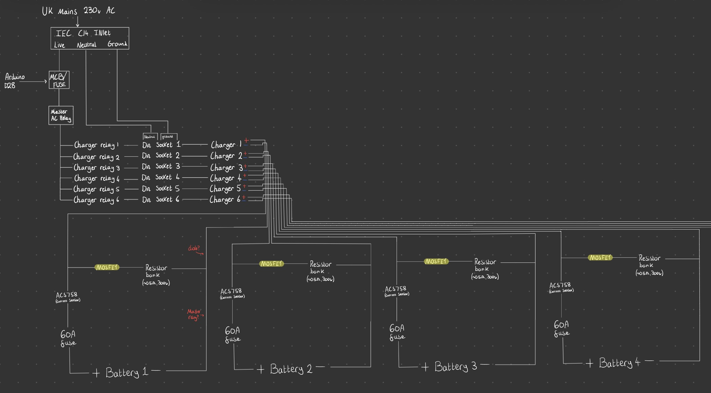

F24 Battery Charging & Discharging

This projects was unfortunately never completed due to budget constraints however I gained some valuable knowledge researching and designing this system.
According to research completed by other F24 teams, battery management systems improve race performace hugely and according to one particular team, it improved their range by 20%, which is a huge advantage in the race, meaning you can expand to different gear ratios for faster top speed.
The main aim of this project is to design and implement a battery management system that improved our race performance. It started with a simple idea of repeatedly charging and discharging the battery in a set period of time to 'train' the battery to last a specific length of time.
My main focus was the electrical side of the project as this was my specialty in the team.
The design
Due to school regulations, the system had to be kept away from students and have redundancy and safety features built into the design to minimise the risk of danger.
Before designing this system, I had done some work on Arduino based projects but never used relays and MOSFETs before to power 230V systems. Learning how they work was very interesting as it opens up a whole world of electrical engineering I had never experienced before.
I decided that the best approach would be to use an Arduino Mega 2560 as the controlling board for the system as it has many I/O pins and can handle the complexity of the project.
The batteries are 12V lead acid batteries and would be charged with a regular smart charger, the switching of this would be controlled via the arduino to turn on and off the 230V supply to the charger.
The next key part was the discharging. This is key because it allows us to test the batteries performance and 'train' it for the race.
A bank of resistors would be used to safely dissipate the energy from the discharging process, also creating heat in the meantime, which is really useful for the charging process as charging while under hotter conditions can increase the capacity of the battery, improving its performance.
Many safety systems were implemented to ensure the system was safe to operate and that any potential issues could be quickly identified and addressed. These included: emergency stop buttons, overcurrent & overvoltage protection, temperature sensors, power cut-off protection and more.
I also planned to include some sort of method that sends an email to the teachers who run the elective if something in the system failed however I never fully worked this out.
I then created a document outlining the design and implementation plan for the battery management system, which can be viewed below:
The files to the electrical design need to be modified to reflect the latest changes but you can find the current ones here:
Open Battery Management System Design
On iPhone and iPad, inline PDF preview can be limited. Use the link above to open the full document in a new tab.
Challenges & Conclusions
Designing this project was a challenging but rewarding experience. I learned a lot about battery management and the importance of safety in electrical systems. Learning how more electrical componets work and how they are used in systems was a valuable learning experience.
As with many school projects, budget was the main deciding factor for not competing the project. My main aim was to create the best possible system within the given constraints. As a result, I had to make several compromises and focus on the most essential features as projects like this can become very expensive very quickly.
As a team we worked to create a final proposal where all of our ideas were put together and the other groups put together budgets and other plans like a container and position for the system as our school is limited in space.
Creating this project was a great learning experience and I am proud of what we were able to accomplish within the given constraints, it would be amazing if future teams were able to build upon our work and create an even better system.